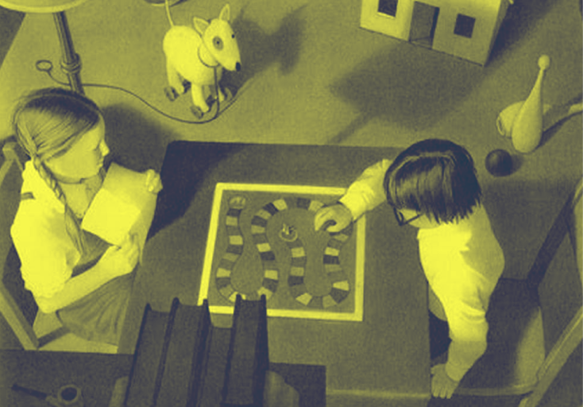

Dive into the fascinating world of Jumanji, a game where adventure comes to life and every roll of the dice can change the course of your destiny!
The book Jumanji, written by Chris Van Allsburg and published in 1981, is a must-read in children's literature that beautifully illustrates the transformative potential of board games. Through the story of two children, Judy and Peter, who discover a mysterious board game, Van Allsburg creates an adventure where the game becomes a gateway to a wild and unpredictable world. This work raises important questions about the interaction between the real world and the world of the game, themes that resonate particularly in the context of the evolution of board games.

An immersive adventure
In Jumanji, every roll of the dice takes the characters into increasingly crazy and dangerous situations, such as encounters with wild animals or extreme weather. This augmented reality concept foreshadows modern games that incorporate interactive and immersive elements. Today, with technological advances, board games use augmented reality to enhance the gaming experience, just as the Jumanji game transformed the reality of the characters.

Lessons from Jumanji
The story of Jumanji goes beyond mere entertainment. It emphasizes the importance of cooperation, strategy, and the consequences of actions within a playful framework. The children must work together to overcome the challenges the game presents, thus strengthening their social bonds. This echoes current trends where modern board games increasingly promote collaboration rather than competition.
A bridge to the future
Looking ahead to the future of board games, Jumanji offers a fascinating perspective. In the digital age, board games could evolve into even more immersive experiences, using virtual reality platforms that would allow players to experience even more rich adventures. Furthermore, the interaction between players and the game could deepen with the integration of artificial intelligence, offering a unique personalization to each game experience.
In summary, Jumanji is much more than just a children's book. It represents a deep reflection on the evolution of board games, highlighting their ability to elevate human experience through shared adventures. This book echoes changes in the gaming landscape, connecting the past, the present, and the future in a captivating way. Thus, by exploring Jumanji, we better understand the importance and role of board games in our lives and how they will continue to evolve with us.
This iconic story invites readers to consider the endless possibilities of board games, making each game not just a challenge, but a true adventure.

Jumanji 1995 (The Film)
Relive the magical adventure of the Jumanji (1995) film, where two children release a man trapped in a board game, leading them into a frantic race to finish the game and restore order to their world.

Joe Johnston
Discover Joe Johnston, the director of Jumanji (1995), who blends adventure and fantasy to create captivating films and enrich modern cinema.
Poker Face - Lady Gaga
Dive into the world of Poker Face, the iconic hit by Lady Gaga, which explores themes of love and mystery through an infectious melody and captivating lyrics, transforming the pop scene of the 2000s.